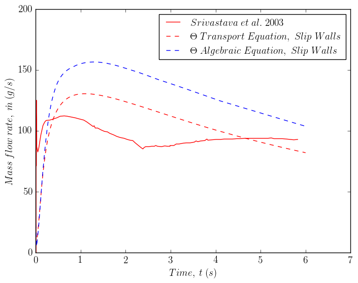

3.2. Python Example Scripts¶
Here I provide some example scripts using Python.
3.2.1. Line Plot¶
3.2.1.1. Inputs¶
Only 10 lines of input are shown
3.2.1.1.1. massflow1.csv¶
"massflow","Normals:0","Normals:1","Normals:2","Theta","U1:0","U1:1","U1:2","U1Mean:0","U1Mean:1","U1Mean:2","U2:0","U2:1","U2:2","U2Mean:0","U2Mean:1","U2Mean:2","alpha0","alpha1","alpha1Mean","epsilon","k","magU1Mean","p","vtkValidPointMask","Time","Point Coordinates:0","Point Coordinates:1","Point Coordinates:2"
23.471,0,-0.0008,0,8e-08,0,0,0,-3.4155e-08,-2.2434e-05,0,0,0,0,-1.8658e-07,-6.1171e-05,0,0,0.00024,0.0002543,0.008,0.0008,3.7648e-05,0,1,0,5.294e-19,0,0.005
7.6373,-2.9382e-09,-2.4731e-05,0,,,,,-1.3166e-09,-7.0585e-05,0,-5.8777e-10,-7.4743e-06,0,-2.3408e-09,-4.0143e-05,0,,,0.00026004,0.00024876,0.008,0.0008,0.034008,1,0.02,5.294e-19,0,0.005
14.953,-5.5675e-10,-4.6299e-05,0,,,,,-1.5894e-09,-0.00011494,0,-1.1204e-09,-1.2638e-05,0,8.2655e-10,-8.4733e-05,0,,,0.00027811,0.00025941,0.008,0.0008,0.035725,1,0.04,5.294e-19,0,0.005
22.234,5.4956e-08,-6.5742e-05,0,,,,,-1.0427e-08,-0.00014026,0,1.4776e-08,-1.7105e-05,0,2.5515e-08,-0.00012841,0,,,0.00029972,0.00026896,0.008,0.0008,0.042165,1,0.06,5.294e-19,0,0.005
31.129,7.4337e-07,-8.4379e-05,0,,,,,1.9414e-07,-0.00014846,0,2.0474e-09,-2.2277e-05,0,8.6743e-07,-0.0001617,0,,,0.00032257,0.00027944,0.008,0.0008,0.046177,1,0.08,5.294e-19,0,0.005
40.001,-3.0353e-06,-9.8115e-05,0,,,,,-1.1508e-06,-0.00015053,0,-1.102e-07,-2.7266e-05,0,-3.1698e-06,-0.00019721,0,,,0.00035049,0.00029096,0.008,0.0008,0.048939,1,0.1,5.294e-19,0,0.005
48.841,-9.34e-06,-0.00011092,0,,,,,-4.3873e-06,-0.00015469,0,-4.7848e-07,-3.2011e-05,0,-9.3202e-06,-0.00022395,0,,,0.00036497,0.00030223,0.008,0.0008,0.050248,1,0.12,5.294e-19,0,0.005
57.111,-1.777e-05,-0.00012178,0,,,,,-9.1128e-06,-0.00016643,0,-1.3679e-06,-3.6296e-05,0,-1.8235e-05,-0.00025455,0,,,0.00037201,0.00031172,0.008,0.0008,0.050722,1,0.14,5.294e-19,0,0.005
64.661,-6.4353e-06,-0.00013085,0,,,,,-1.1019e-05,-0.00017432,0,-2.5499e-06,-4.0137e-05,0,-4.5394e-06,-0.00027862,0,,,0.00037102,0.00031931,0.008,0.0008,0.051038,1,0.16,5.294e-19,0,0.005
3.2.1.1.2. massflow2.csv¶
"massflow","Normals:0","Normals:1","Normals:2","Theta","U1:0","U1:1","U1:2","U1Mean:0","U1Mean:1","U1Mean:2","U2:0","U2:1","U2:2","U2Mean:0","U2Mean:1","U2Mean:2","alpha0","alpha1","alpha1Mean","epsilon","k","magU1Mean","p","vtkValidPointMask","Time","Point Coordinates:0","Point Coordinates:1","Point Coordinates:2"
23.471,0,-0.0008,0,8e-08,0,0,0,-3.4155e-08,-2.2434e-05,0,0,0,0,-1.8658e-07,-6.1171e-05,0,0,0.00024,0.0002543,0.008,0.0008,3.7648e-05,0,1,0,5.294e-19,0,0.005
5.0304,-5.2566e-10,-2.5085e-05,0,,,,,1.1786e-09,-7.1071e-05,0,4.0284e-10,-5.375e-06,0,-1.246e-09,-4.0451e-05,0,,,0.00025214,0.00024453,0.008,0.0008,0.033502,1,0.02,5.294e-19,0,0.005
12.332,1.1858e-08,-4.9224e-05,0,,,,,4.7837e-09,-0.00012561,0,1.0725e-09,-1.1807e-05,0,1.3984e-08,-8.2887e-05,0,,,0.00026734,0.00025244,0.008,0.0008,0.034008,1,0.04,5.294e-19,0,0.005
18.906,9.8395e-09,-6.6946e-05,0,,,,,2.7294e-09,-0.00016077,0,1.7992e-09,-1.6603e-05,0,1.5413e-08,-0.00012798,0,,,0.00028996,0.00026044,0.008,0.0008,0.037965,1,0.06,5.294e-19,0,0.005
28.454,-1.2262e-08,-8.4569e-05,0,,,,,-2.8898e-09,-0.00019156,0,1.431e-09,-2.2228e-05,0,-1.0381e-08,-0.00016924,0,,,0.00031363,0.00027132,0.008,0.0008,0.046039,1,0.08,5.294e-19,0,0.005
38.63,-5.3488e-09,-0.00010009,0,,,,,-5.3095e-09,-0.00020789,0,2.7513e-10,-2.8042e-05,0,-2.8409e-09,-0.00019444,0,,,0.00032849,0.00028147,0.008,0.0008,0.04602,1,0.1,5.294e-19,0,0.005
48.74,-1.0939e-08,-0.0001135,0,,,,,-1.1615e-08,-0.0002241,0,-1.0548e-09,-3.3661e-05,0,-8.3342e-09,-0.00022206,0,,,0.00033478,0.00028984,0.008,0.0008,0.047049,1,0.12,5.294e-19,0,0.005
58.405,-1.2923e-08,-0.00012526,0,,,,,-1.8964e-08,-0.00023707,0,-3.0465e-09,-3.8872e-05,0,-7.6447e-09,-0.0002494,0,,,0.00033791,0.00029653,0.008,0.0008,0.047184,1,0.14,5.294e-19,0,0.005
67.368,-5.3623e-08,-0.00013555,0,,,,,-3.6884e-08,-0.00024664,0,-5.7236e-09,-4.3564e-05,0,-4.8501e-08,-0.00027319,0,,,0.00033866,0.00030173,0.008,0.0008,0.048159,1,0.16,5.294e-19,0,0.005
3.2.1.1.3. srivastava.csv¶
Default Dataset,
X,Y
0.007734806629834279,0
0.007734806629834279,70.82683307332292
0.015469613259668558,71.45085803432139
0.015469613259668558,125.11700468018721
0.015469613259668558,115.13260530421218
0.023204419889502836,95.16380655226209
0.023204419889502836,87.05148205928236
0.04640883977900556,82.68330733229328
3.2.1.2. Script¶
import numpy as np
import matplotlib.pyplot as plt
exp = np.genfromtxt('srivastava.csv', delimiter=',', skip_header=2, names=['exp_time','exp_massflow'])
cfd1 = np.genfromtxt('massflow1.csv', delimiter=',', skip_header=1, names=["massflow","Normals:0","Normals:1","Normals:2","Theta","U1:0","U1:1","U1:2","U1Mean:0","U1Mean:1","U1Mean:2","U2:0","U2:1","U2:2","U2Mean:0","U2Mean:1","U2Mean:2","alpha0","alpha1","alpha1Mean","epsilon","k","magU1Mean","p","vtkValidPointMask","Time","Point Coordinates:0","Point Coordinates:1","Point Coordinates:2"])
cfd2 = np.genfromtxt('massflow2.csv', delimiter=',', skip_header=1, names=["massflow","Normals:0","Normals:1","Normals:2","Theta","U1:0","U1:1","U1:2","U1Mean:0","U1Mean:1","U1Mean:2","U2:0","U2:1","U2:2","U2Mean:0","U2Mean:1","U2Mean:2","alpha0","alpha1","alpha1Mean","epsilon","k","magU1Mean","p","vtkValidPointMask","Time","Point Coordinates:0","Point Coordinates:1","Point Coordinates:2"])
exp_time = exp['exp_time']
exp_massflow = exp['exp_massflow']
cfd_time1 = cfd1["Time"]
cfd_massflow1 = cfd1["massflow"]
cfd_time2 = cfd2["Time"]
cfd_massflow2 = cfd2["massflow"]
plt.figure(1)
font = {'family' : 'normal',
'weight' : 'normal',
'size' : 14}
plt.rc('font', **font)
plt.rc('text', usetex=True)
plt.rc('font', family='serif')
ax1 = plt.gca()
plt.rc('text', usetex=True)
plt.rc('font', family='serif')
line1=ax1.plot(exp_time, exp_massflow, color='r', marker='None',markersize=7.5,linestyle='-',label=r'$Srivastava \ et \ al. \ 2003$')
line2=ax1.plot(cfd_time1, cfd_massflow1, color='r', marker='None',markersize=7.5,linestyle='--',label=r'$\Theta \ Transport \ Equation, \ Slip \ Walls$')
line3=ax1.plot(cfd_time2, cfd_massflow2, color='b', marker='None',markersize=7.5,linestyle='--',label=r'$\Theta \ Algebraic \ Equation, \ Slip \ Walls$')
lines = line1+line2+line3
labels = [l.get_label() for l in lines]
legend= ax1.legend(lines, labels, loc='upper right', fontsize='medium')
ax1.set_xlabel(r'\textit{$Time, \ t \ (s)$}')
ax1.set_ylabel(r'\textit{$Mass \ flow \ rate, \ \dot{m} \ (g/s)$}')
ax1.set_xlim([0,7])
ax1.set_ylim([0,200])
plt.savefig('massflow',bbox_inches='tight')
3.2.1.3. Output¶
